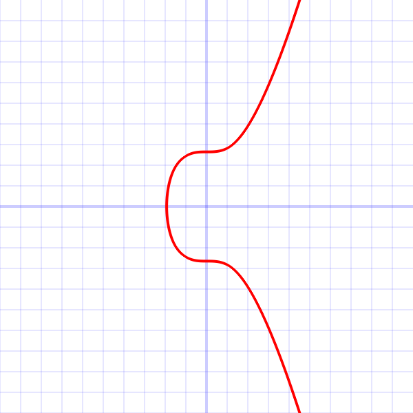

* * 
{kind=link}
secp256k1 refers to the parameters of the ECDSA curve used in Bitcoin, and is defined in Standards for Efficient Cryptography (SEC) (Certicom Research, http://www.secg.org/sec2-v2.pdf).
secp256k1 was almost never used before Bitcoin became popular, but it is now gaining in popularity due to its several nice properties. Most commonly-used curves have a random structure, but secp256k1 was constructed in a special non-random way which allows for especially efficient computation. As a result, it is often more than 30% faster than other curves if the implementation is sufficiently optimized. Also, unlike the popular NIST curves, secp256k1's constants were selected in a predictable way, which significantly reduces the possibility that the curve's creator inserted any sort of backdoor into the curve.
Technical details
As excerpted from Standards:
The elliptic curve domain parameters over Fp associated with a Koblitz curve secp256k1 are specified by the sextuple T = (p,a,b,G,n,h) where the finite field Fp is defined by:
- p = FFFFFFFF FFFFFFFF FFFFFFFF FFFFFFFF FFFFFFFF FFFFFFFF FFFFFFFE FFFFFC2F
- = 2256 - 232 - 29 - 28 - 27 - 26 - 24 - 1
The curve E: y2 = x3+ax+b over Fp is defined by:
- a = 00000000 00000000 00000000 00000000 00000000 00000000 00000000 00000000
- b = 00000000 00000000 00000000 00000000 00000000 00000000 00000000 00000007
The base point G in compressed form is:
G = 02 79BE667E F9DCBBAC 55A06295 CE870B07 029BFCDB 2DCE28D9 59F2815B 16F81798 and in uncompressed form is:
G = 04 79BE667E F9DCBBAC 55A06295 CE870B07 029BFCDB 2DCE28D9 59F2815B 16F81798 483ADA77 26A3C465 5DA4FBFC 0E1108A8 FD17B448 A6855419 9C47D08F FB10D4B8 Finally the order n of G and the cofactor are:
n = FFFFFFFF FFFFFFFF FFFFFFFF FFFFFFFE BAAEDCE6 AF48A03B BFD25E8C D0364141
- h = 01
?es:Secp256k1